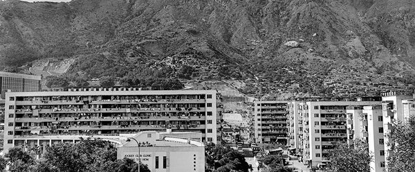
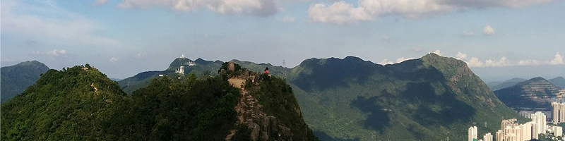

獅子山
獅子山（ししざん、広東語読み: シジサン）、あるいはライオンロック（英:Lion Rock）は、香港にある標高495mの岩山である。
日本の富士山が日本の象徴の一つとして扱われているように、香港人にとって獅子山は香港の象徴の一つであるとされる。
九龍塘と大圍の間に位置する新界にある。マクレホース・トレイルの第5路段の経路上にあるが登頂ルートはトレイルの一部ではない。

山頂から突き出ている岩が、ライオンの頭部のような形をしていることからこの名前が付いた。
「獅子山下精神」という言葉は香港精神の代名詞の山である。
歴史
戦争を避難するため、前世紀50年代に大陸からたくさんの避難民が逃げ込んできた。
獅子山がはっきりと見える九龍は、最も人口の多い場所になった｡
山の麓に不法占拠者の住みかや、スラム、公営住宅、旧式工場ビル、コテージ工場などが次々と建設され、
香港が貧困から再建され、発展していく時代を刻んだ｡

登山
マクレホース・トレイルの第5路段が獅子山山頂から約0.5キロ下、
北側の山腹を通過している。
公式の登山道はそこから2か所の分岐路で、
西側のサミット(通称:獅頭)或るいは東側のサミット(通称:獅尾)に至る。
他にも難易度の高い非公式な登山道(例:獅尾脊)がいくつかある。
